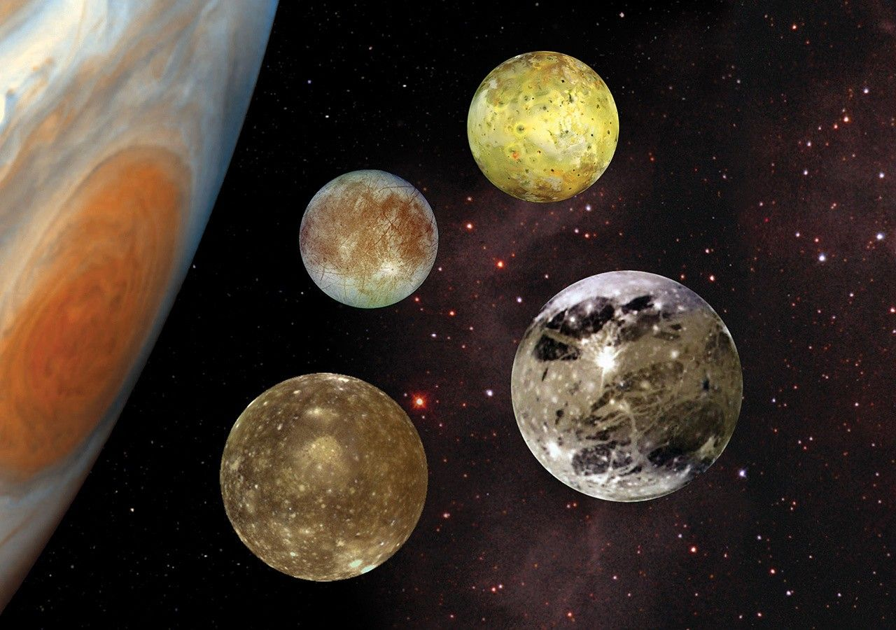

Jupiter Facts
- Jupiter is the largest planet, about 11 times wider than Earth.
- It is the fifth planet from the Sun, about 778 million km away.
- A day on Jupiter is just under 10 hours, the shortest of any planet.
- One year on Jupiter takes about 12 Earth years.
- Jupiter has 115 moons. Officially recognized. Its four largest moons are lo, Europa, Ganymede, and Callisto.
- The Great Red Spot is a storm bigger than Earth that has raged for at least 150 years.
- It is made mostly of hydrogen and helium, and has no solid surface.
- More than 1,300 Earths could fit inside Jupiter.

Jupiter and its four biggest moons. From Top to bottom are lo, Europa, Ganymede, and Callisto